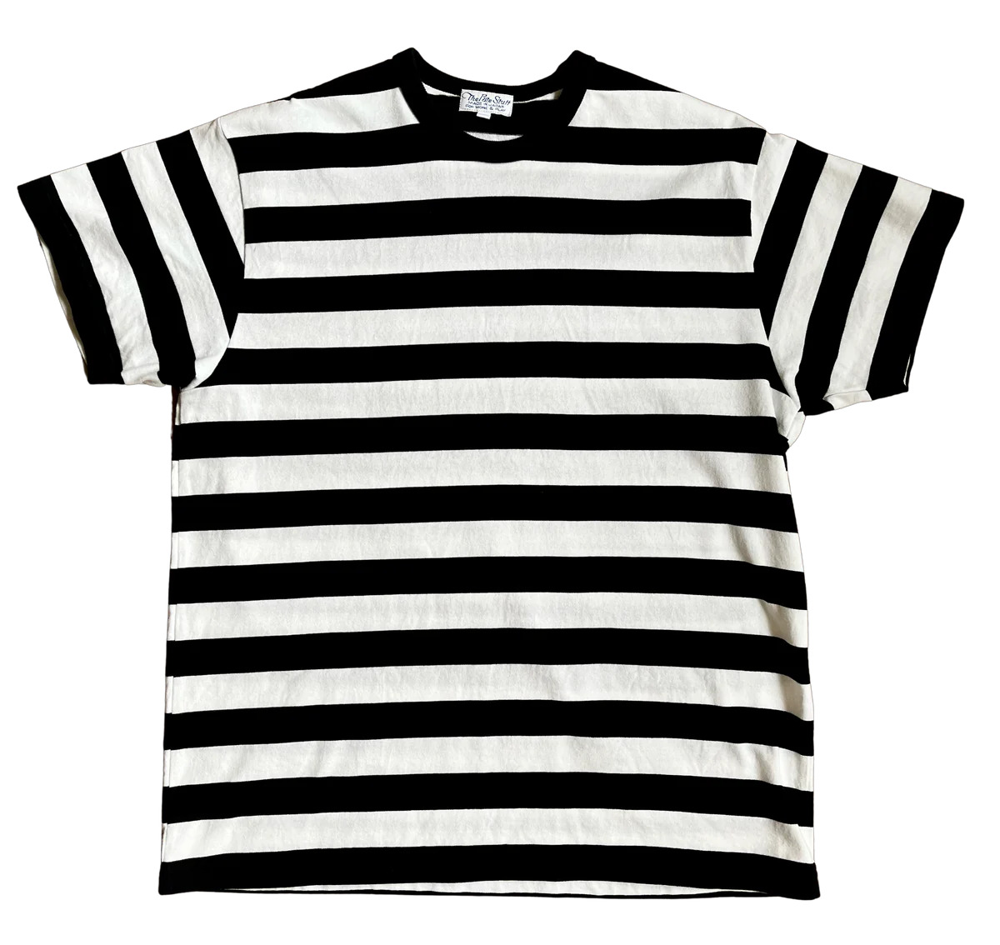
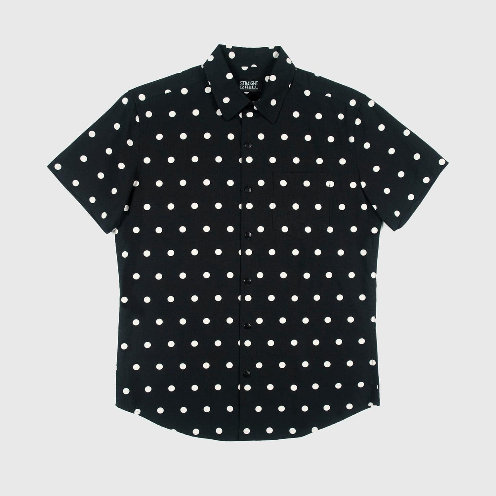
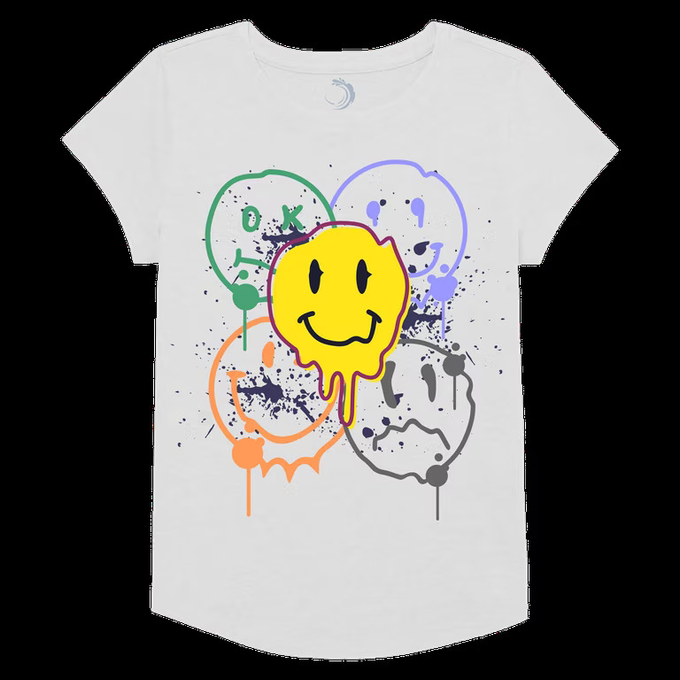

Clean. Bold. Timeless. Stripes are making a huge comeback in our next drop, with brand-new color blends and pattern sizes that add personality to any fit.
We’re taking polka dots beyond the basics. Expect edgy combinations and off-balance placements that flip the traditional design on its head — in the best way.
The smiley face is more than a symbol — it’s a statement. We’re bringing it into a whole new vibe with bold colors, hand-drawn versions, and layered graphics.
